Reti Radiomobili - Progetto IOT
Vincenzo Cimino 0649398
Riccardo Badagliacco 0647519
Premessa
Introduzione all'IoT
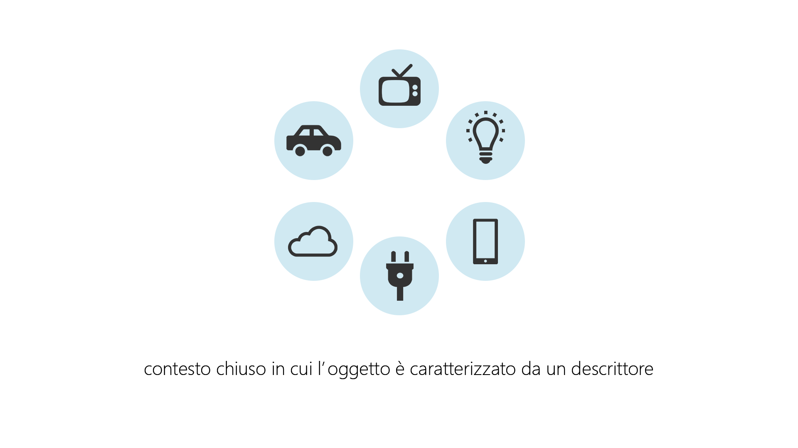
Introduzione all'IoT
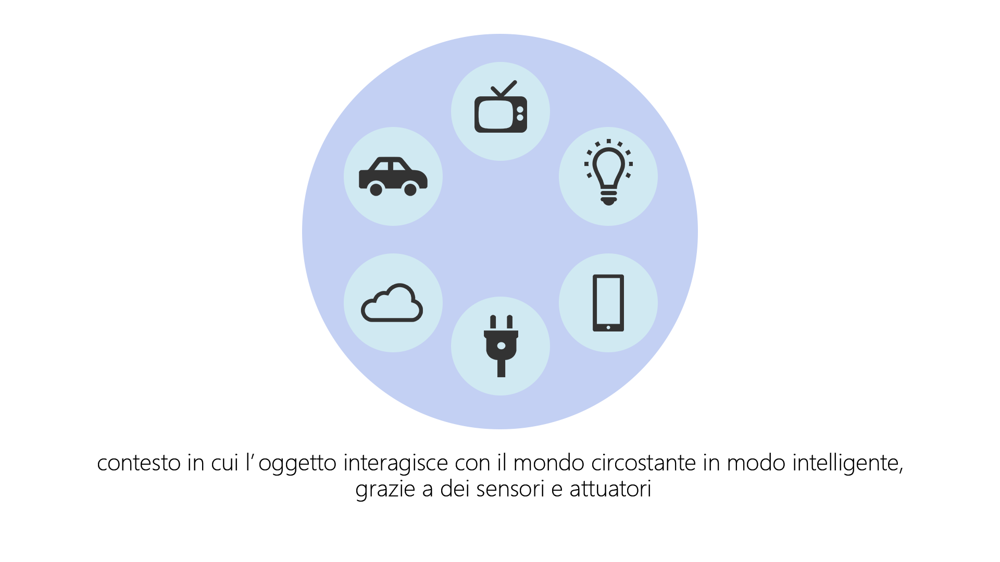
Introduzione all'IoT
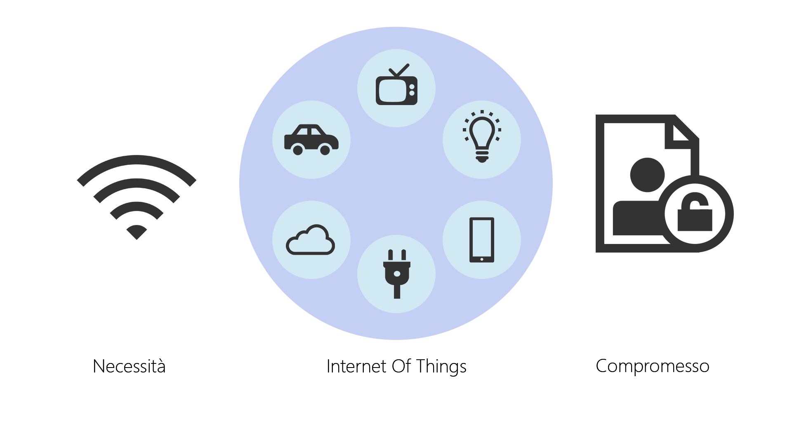
Dispositivi smart
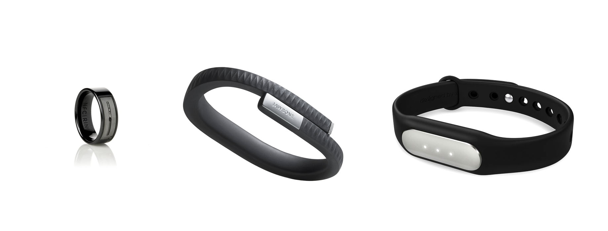
Piattaforme di sviluppo
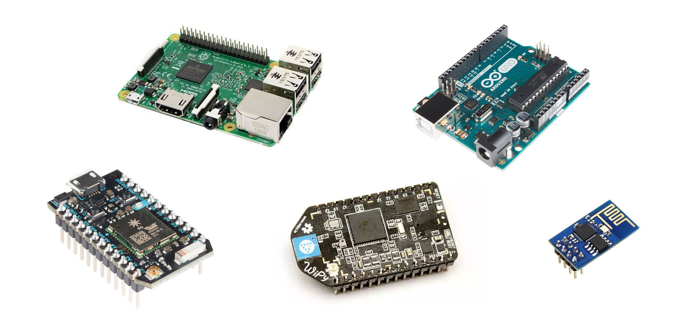
Sensori a basso costo
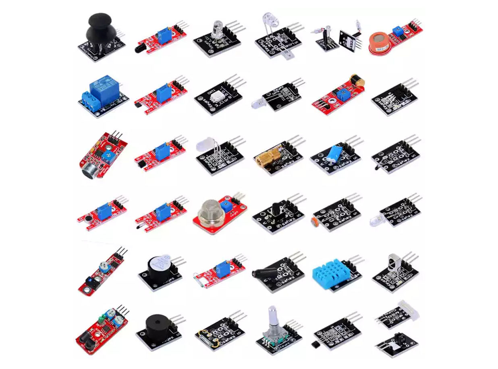
Progetto sviluppato
Scanner d'ambiente
Si progetti uno scanner ambientale con sonar capace di collezionare il valore di distanza acquisito dal sensore HC-SR04 ed effettuare una scansione a 360° dell'ambiente circostante, raccogliere i dati e presentarli graficamente. Predisporre l'applicazione all'accesso a rete wifi utilizzando l'interfaccia wireless integrata, il sistema deve integrare un webserver minimale per la visualizzazione del valore di distanza.
Componenti utilizzati
| 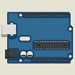 | Scheda Wemos D1 |
| Sensore Ultrasuoni HC SR04 |
| 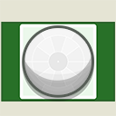 | Sensore Infrarossi PIR HC-SR501 |
| 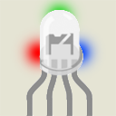 | Led RGB |
| 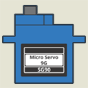 | Servo motore SG90 |
Componenti opzionali
| Display OLED 128x64 pixel |
| Buzzer per la segnalazione acustica |
| Modulo di rilevamento acustico |
Sensore ad ultrasuoni
Panoramica
Funzionamento base
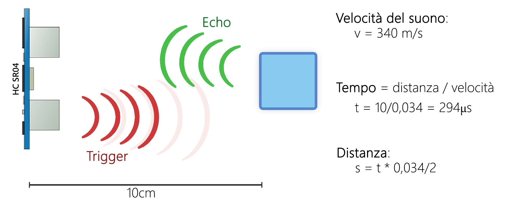
Segnali di input e output
Pin Trigger e pin Echo
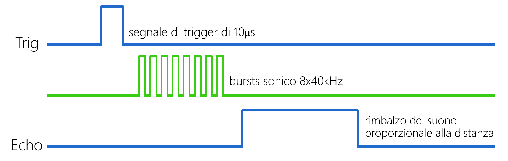
Problematiche e svantaggi
Rilevamenti consecutivi e rimbalzo delle onde sonore
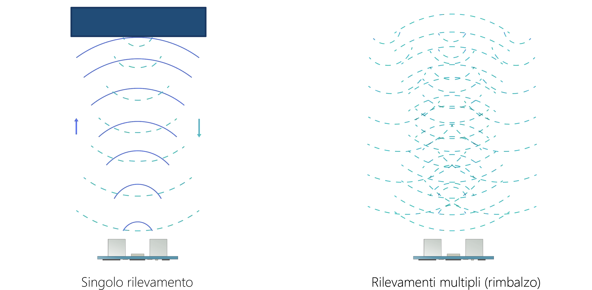
Soluzione introdotta
Mediare i rilevamenti consecutivi per ogni posizione
Utilizzo nel progetto
com'è stato utilizzato?
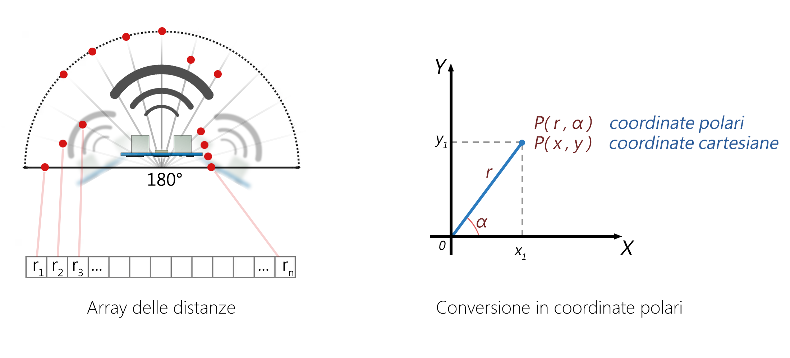
Sensore ad infrarossi
Panoramica
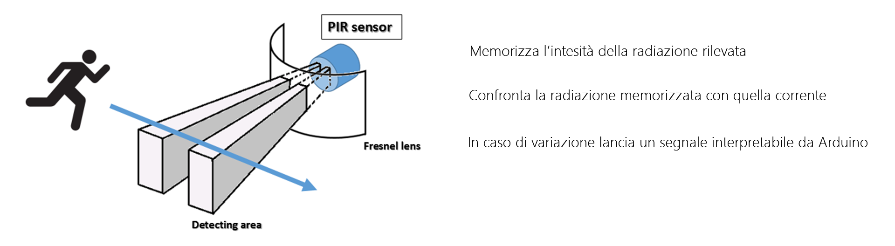
In dettaglio
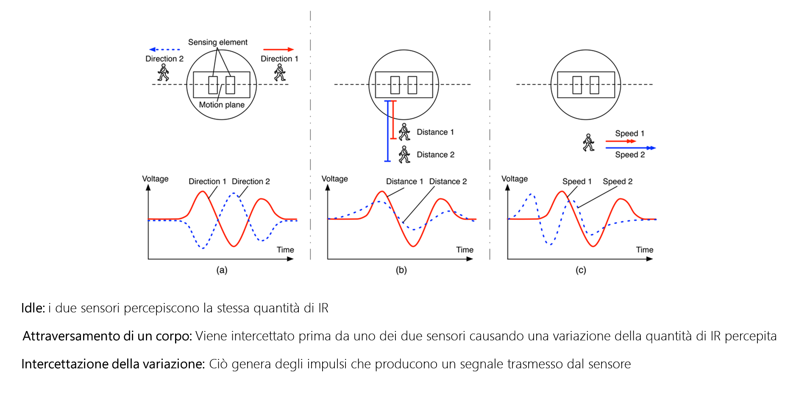
In dettaglio
Lente di Fresnel
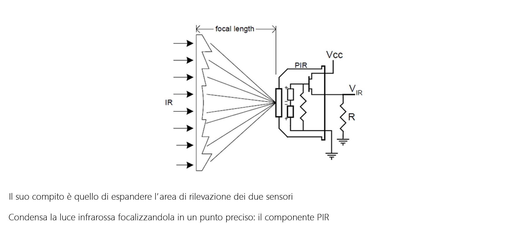
Svantaggi e problematiche
Soggetto a fonti esterne di infrarossi (telecomandi, sole)
Prestazioni peggiori rispetto ai sensori a microonde
Alta sensibilità al movimento dello scanner
Soluzione introdotta
Posizionamento alla base dello scanner
Disattivazione durante lo scanning con gli ultrasuoni
Utilizzo nel progetto
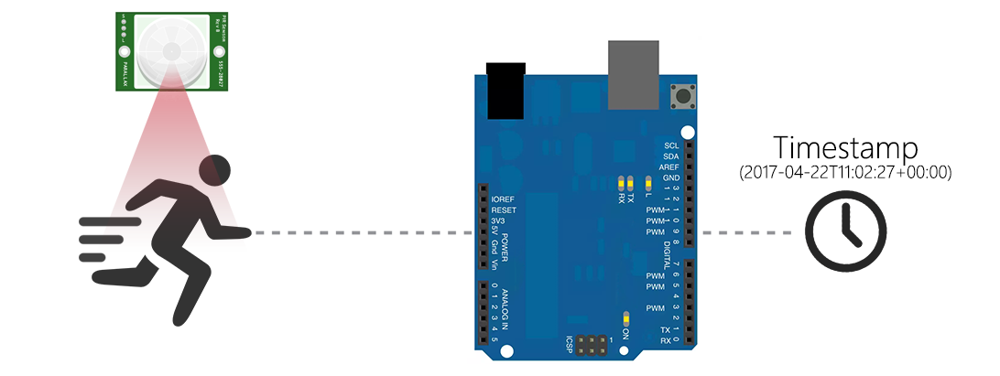
Client e Server (Esp 12e)
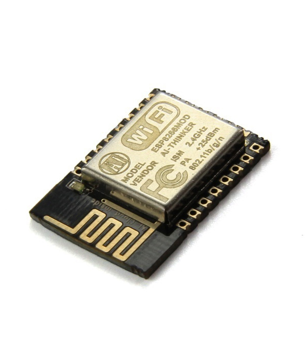
Nodo all'interno di una rete di sensori
Web Server e definizione di API
Rete e comunicazioni
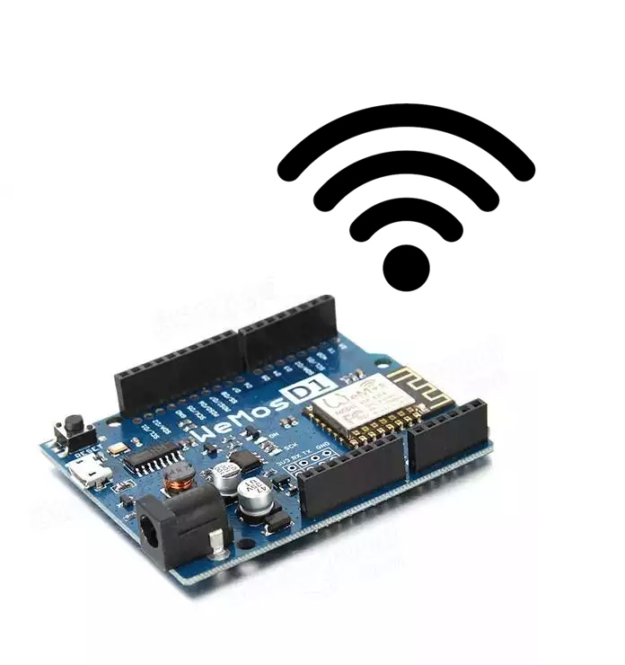
Fase di setup: Access Point
Fase operativa: Stazione client
Comunicazioni con richieste HTTP
Rendering delle pagine
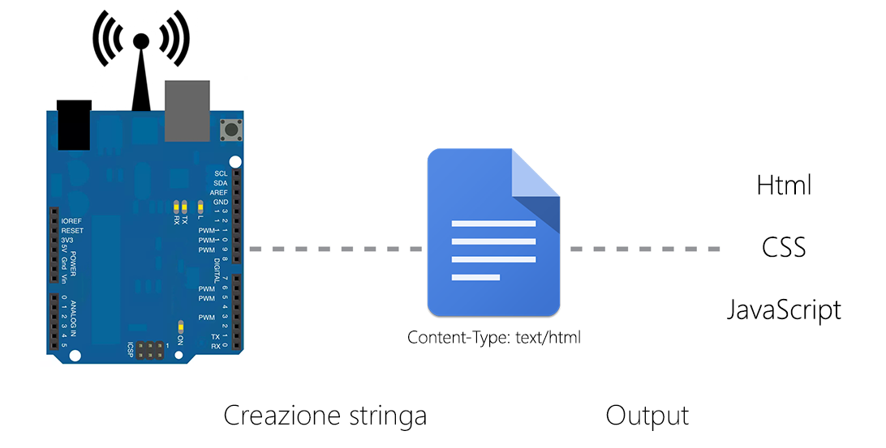
Richieste asincrone Ajax
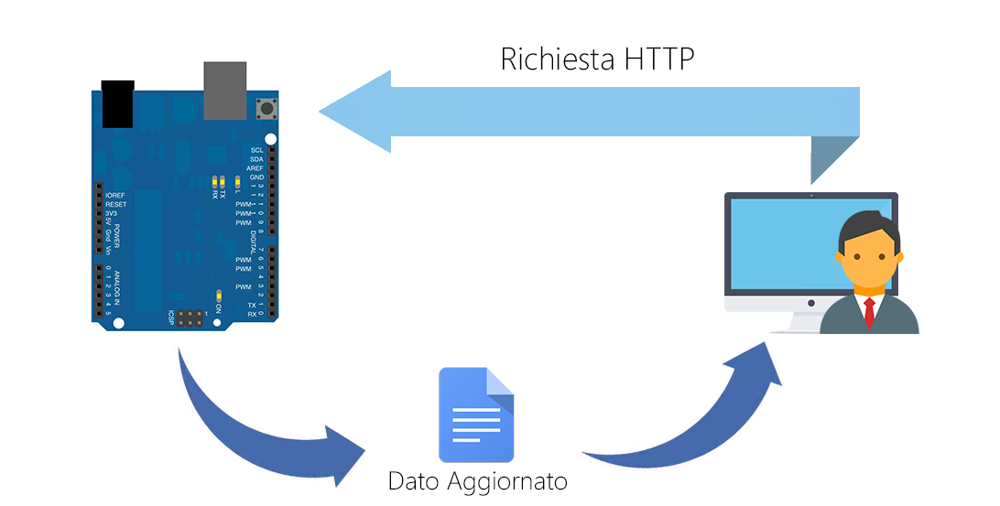
Risultati e conclusioni
Miglioramenti